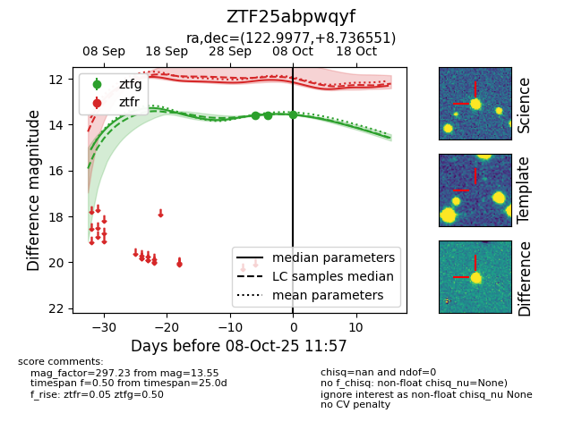
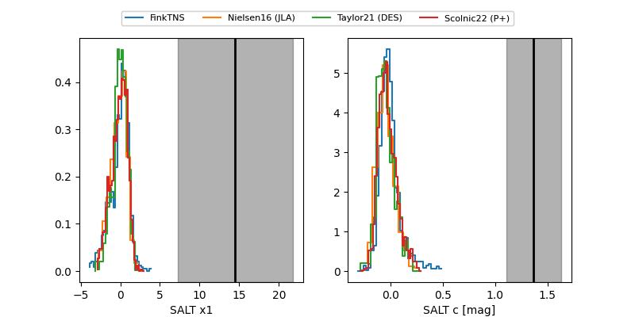

FINK: ZTF25abpwqyf
Lasair: ZTF25abpwqyf
ALeRCE: ZTF25abpwqyf
ZTF25abpwqyf (ztf,fink)
equatorial (ra, dec) = (122.9977,+8.73655)
galactic (l, b) = (214.1657,+21.84612)


last ztfg=13.55, ztfr=12.03
3 ztfg, 2 ztfr detections